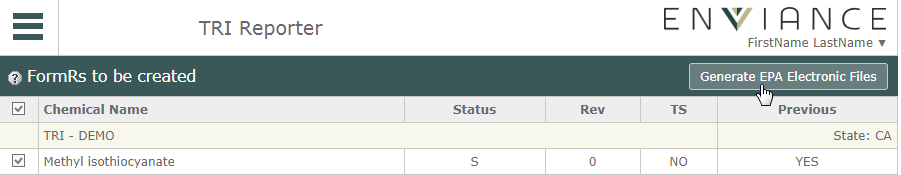

Once your FormRs have been validated and submitted, you can create the EFiles you need for filing electronically with the EPA.
To create electronic files:
On the next page, review the files you've selected, then click Generate EPA Electronic Files.

The EFiles will be generated as .xml files and downloaded.
After downloading the EFiles go to the EPA CDX site (https://cdx.epa.gov/) and follow the third party software upload process as described there.